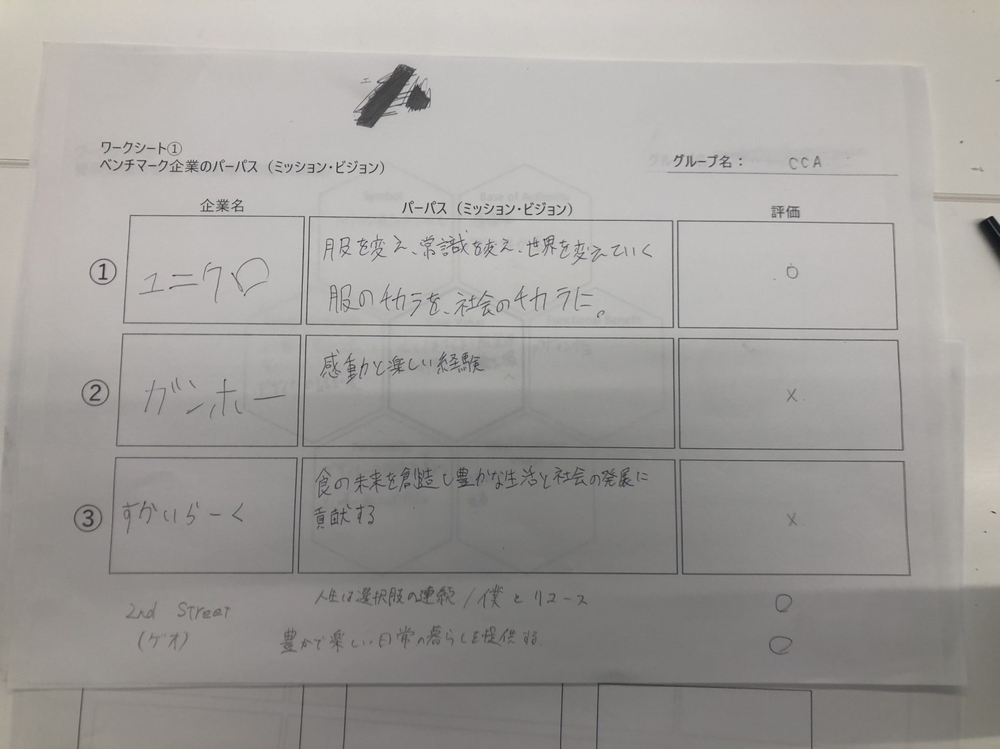
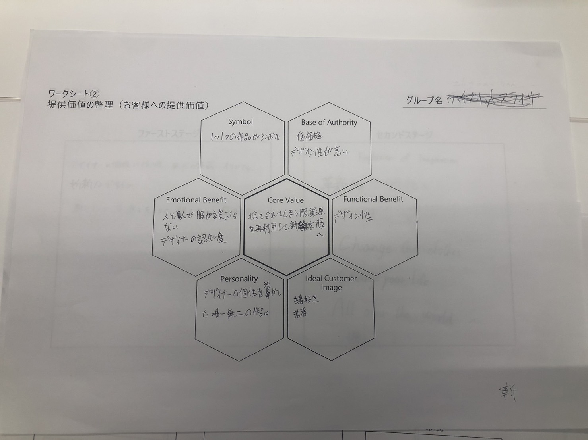
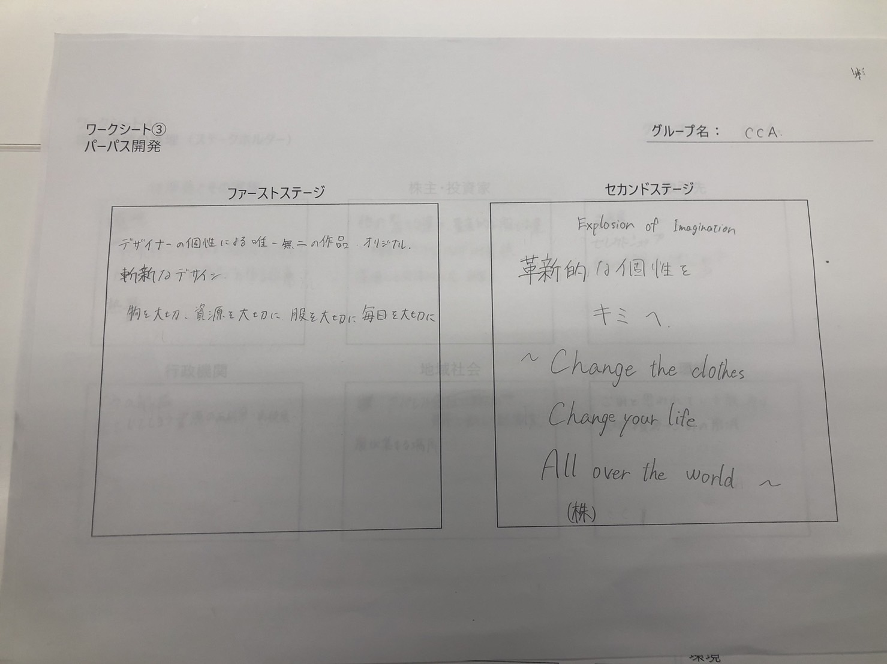
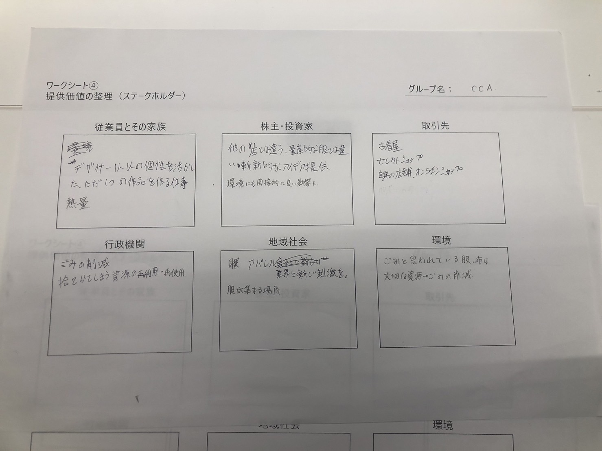

企業のパーパス開発
   
前回と同じように古着を扱った事業です。
core valueは「捨てられてしまう服（資源）を再利用して生まれ変わらせる」です。
また、自社の良い点として、
「服をリメイクするデザイナー一人ひとりの個性がでて、唯一無二の服を提供すること」
「本来ゴミとして捨てられてしまう服、布を使うことで、ゴミ・CO2の削減などの環境問題に貢献できること」
の２点が挙げられます。
パーパスは
革新的な個性をキミへ～Change the clothes Change your life All over the world~
です。
班のメンバー
小松瑚舶
さつき
びゃんびゃん
魚魚魚